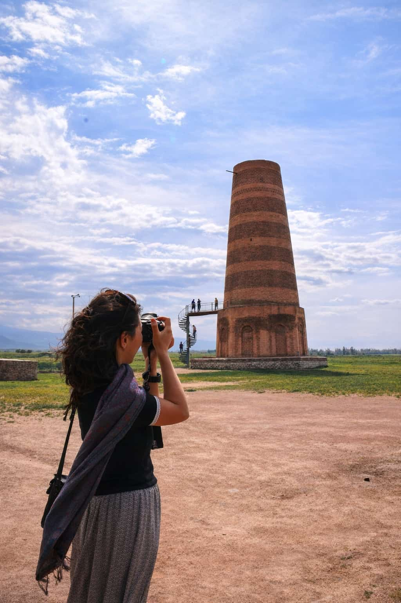
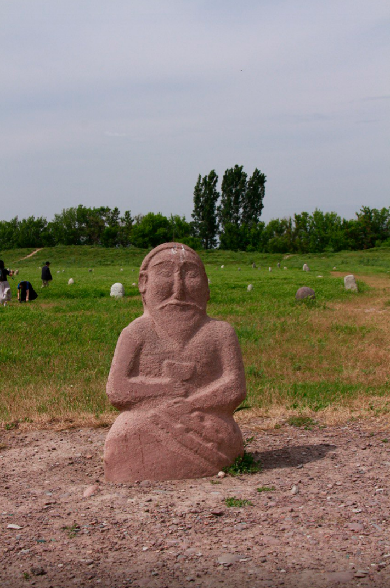
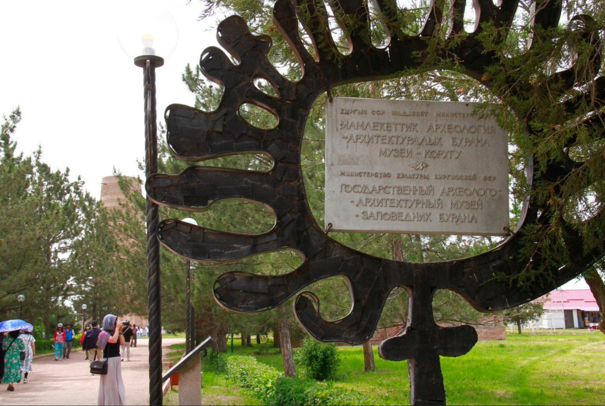

Burana Tower is one of the easiest culture day trips from Bishkek — a real Silk Road landmark in the Chuy Valley. You come for the tower, the ruins around it, and the story behind the place.

What is Burana Tower?
Burana is a historic minaret and archaeological site linked to the Silk Road era. It’s not just “one tower” — the area has ruins, stone statues, and the atmosphere of an old settlement.
The Legend (Video)
Here’s the short legend behind Burana — it hits way better in video than in text.
.png)
Explore the Site
Walk the ruins and open space around the tower — it’s calm, photogenic, and easy to enjoy without rushing.

Best Light for Photos
Late afternoon gives warmer tones on the brickwork and softer shadows — perfect for cinematic shots.

Stone Statues & Details
Don’t only film the tower. The surrounding artifacts and textures make your content feel “real Silk Road”.

Easy Day Trip from Bishkek
Burana fits perfectly into a half-day or full-day route with other Chuy Valley stops.
Quick tips before you go
-
 Best timing: late afternoon Better light, better colors, and more cinematic video.
Best timing: late afternoon Better light, better colors, and more cinematic video. -
 Bring sun protection Open area, little shade — SPF and a cap help a lot.
Bring sun protection Open area, little shade — SPF and a cap help a lot. -
 Film details, not only the tower Textures, statues, footsteps, wind — small clips make your edit feel premium.
Film details, not only the tower Textures, statues, footsteps, wind — small clips make your edit feel premium. -
Combine with nearby stops Burana is perfect inside a Chuy Valley mini-route from Bishkek.